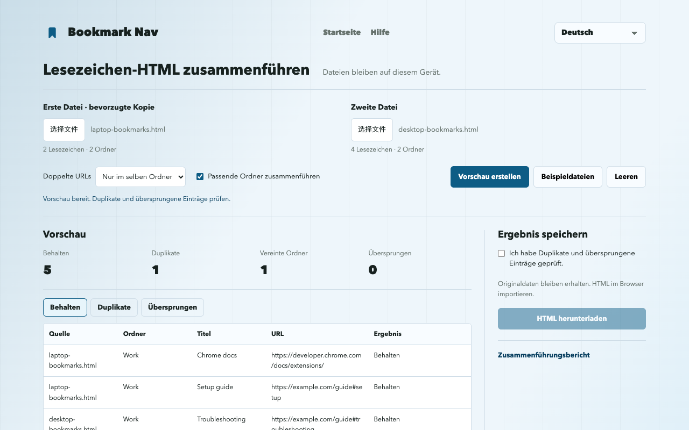

Chrome-Lesezeichen als HTML zusammenführen
Zwei Chrome-HTML-Exporte auswählen, Duplikate prüfen, die gemeinsame Datei herunterladen und in Chrome importieren. Das vereint exportierte Dateien, nicht Chrome-Konten oder die Browsersynchronisierung.
Lesezeichendateien zusammenführenExportieren, zusammenführen und importieren
- chrome://bookmarks öffnen und im Menü des Lesezeichenmanagers exportieren. Das Original-HTML als Sicherung behalten und die zweite Sammlung ebenfalls exportieren.
- Im Web-Werkzeug beide Dateien auswählen. Bei Duplikaten hat die erste Datei Vorrang.
- Zunächst nur Duplikate im selben Ordner entfernen. Behaltene, entfernte und übersprungene Einträge prüfen, bevor du Regeln änderst.
- Vorschau bestätigen und das HTML herunterladen. Die Website verändert keine Browserlesezeichen.
- Das HTML über das Menü des Chrome-Lesezeichenmanagers importieren. Zuerst ein leeres Testprofil verwenden, um keine Duplikate in der Hauptsammlung anzulegen.
Ein reproduzierbares Beispiel mit sechs Links
Die Beispieldateien enthalten sechs Links. Die Standardvorschau behält fünf und entfernt ein Duplikat im selben Ordner. Dieselbe URL in Learning und Work bleibt in beiden Ordnern; #setup und #troubleshooting bleiben verschieden.

Was bleibt, was wird übersprungen?
Beim Entfernen von Duplikaten hat die erste Datei Vorrang. URLs müssen exakt übereinstimmen; Parameter, #Fragmente, Protokoll und www bleiben unterschiedlich. Gleiche URLs in verschiedenen Ordnern bleiben standardmäßig erhalten.
Ordner werden nur bei gleichem Namen und übergeordnetem Pfad vereint. Ohne Ordnerzusammenführung bekommt jede Quelle einen eigenen Ordner; gleichnamige Geschwister werden nummeriert und Leistenmarkierungen entfernt.
Der Download enthält die gesamte Hierarchie, unterstützte URLs, Titel sowie vorhandene ADD_DATE / LAST_MODIFIED-Werte. Symbole, Beschreibungen, Tags und Synchronisationsdaten fehlen. Fehlende oder nicht unterstützte URLs, einschließlich javascript: und data:, werden als übersprungen aufgeführt. Links werden nicht auf Erreichbarkeit geprüft.
Sicherungen und Importgrenzen
Beide Originalexporte behalten und den Zielbrowser vor dem Import sichern. Ein Import fügt Lesezeichen hinzu; Wiederholungen können weitere Kopien erzeugen. Das HTML ersetzt die Sammlung nicht automatisch.
UTF-8-Netscape-Lesezeichen-HTML. Je Datei: maximal 10 MiB, 25,000 Lesezeichen/Ordner und 64 Ordnerebenen ohne äußere Liste. JSON und plist werden nicht unterstützt.
Das Ergebnis kann die Eingabegrenzen überschreiten und lässt sich dann möglicherweise nicht erneut einlesen. Separate Quellordner fügen eine Ebene hinzu. Originalexporte behalten.
Chrome verwirft leere Ordner und setzt Ordnerdaten neu. Titel, URLs und Hinzufügedaten der Lesezeichen bleiben erhalten. Markierungen können der Lesezeichenleiste zugeordnet werden.
Website und Erweiterungsimport
Die Website funktioniert ohne Erweiterung und lädt nur HTML herunter. Direktes Hinzufügen, Sicherung und geprüftes Rückgängigmachen sind für Erweiterung 1.3.1 vorbereitet; die öffentliche Store-Version muss sie noch nicht enthalten. Installierte Version und Importmenü prüfen. Direkte Importe erstellen einen separaten Ordner mit aktuellen statt ursprünglichen HTML-Daten.
Bookmark Nav installierenHäufige Fragen
Werden Dateien hochgeladen?
Dateien werden nur im Speicher dieses Tabs verarbeitet, ohne Upload oder Analyse. Neuladen oder Verlassen löscht geladene Dateien. Downloads bleiben auf deinem Gerät.
Werden Chrome-Konten oder Synchronisierungssammlungen vereint?
Nein. Zwei HTML-Exporte werden lokal zusammengeführt. Chrome-Synchronisierung folgt weiterhin deinen Browsereinstellungen.
Bleiben Datumswerte und leere Ordner erhalten?
Originaldaten bleiben erhalten. HTML im Browser importieren.
Chrome verwirft leere Ordner und setzt Ordnerdaten neu. Titel, URLs und Hinzufügedaten der Lesezeichen bleiben erhalten. Markierungen können der Lesezeichenleiste zugeordnet werden.